myAmerica Developer Summit
April 11-12, 2015
Washington, D.C.
#dev4outdoors
Join the slack channel!! https://dev4outdoors.herokuapp.com/
Final open repo available at https://github.com/myAmericaDevSummit2015
#dev4outdoors
Join the Slack Channel!!! https://dev4outdoors.herokuapp.com/



Abstract
This developer summit will focus on developing products, services and other resources that promote and protect America's public lands and waters. Part of the myAmerica project, this event will bring together technologists, developers, outdoor enthusiasts, government, academia and industry to build better products to enhance our appreciation, utilization and protecion of one of our greatest national assets: federal lands and waters. This event will take place April 11-12 in Washington D.C.
What is myAmerica? myAmerica is an initiative to bring our nations lands and waters closer to the people that they collectively belong to. There are many benefits of bringing these wild areas within closer reach; among them improving public health through accessible ways to exercise, reduce stress and spend time outdoors; education through better awareness of man’s impact on nature and a better understanding of ecological principles; cost affordable ways to travel and explore with friends and family; and a closer connection to our country’s diverse history.
The myAmerica initiative helps to expand and explore opportunities for citizen engagement and industry partnerships, and supports the Recreation One Stop (Rec1Stop) ongoing efforts to modernize reservations. We're supporting interactive planning tools, integrated third party data access efforts, data transparency, field operations support, and marketing / customer service initiatives.
Sessions
Sessions are challenges or ideas that participants want to collectively work on during the myAmerica Developer Summit. If you would like to propose a session, please use the link below to open an issue. Each day during the pitch sessions you'll have the opportunity to share your idea with the group, and build a team around a particular challenge of interest. Feel free to comment on existing sessions, or propose merging similar ideas to build a more robust team.
Propose Your Own Session!
Active Sessions:
Agenda
Agenda, Day One:
8:00 AM Registration and Networking: Check-in for the myAmerica Developer Summit is at the C Street entrance of the U.S. Department of the Interior between 18th and 19th Street. Pre-registration is required.
9:00 AM Welcome Remarks: format for the day, housekeeping, internet access, key government reps.
9:10 AM Opening Remarks: Joyce Hunter, acting CIO for USDA; Jerry Johnston, GIO for DOI; Eric Maland, U.S. Digital Service; OpenStreetMap Mapathon Kick-off
9:30 AM Lightning Talk Pitch Sessions! ~1-3 minutes in length - interested participants should add a "User Session" using the GitHub issue tracker below.
10:00 AM [BREAK]
10:15 AM Hack!
12:00 PM Lunch on your own - here are some nearby options
1:00 PM Hack!
3:30 PM Pitch Session Recap, Challenges, and Presentations Welcome
5:00 PM Recap, Regroup for Day Two
Agenda, Day Two:
8:00 AM Registration and Networking: Check-in for the myAmerica Developer Summit is at the C Street entrance of the U.S. Department of the Interior between 18th and 19th Street. Pre-registration is required.
9:00 AM Welcome Remarks, Saturday Recap and Highlights
9:15 AM Lightning Talk Project Updates and Retooling!
9:45 AM Hack!
12:00 PM Lunch on your own - here are some nearby options
1:00 PM Hack!
3:00 PM Final Presentations! Presentation kickoff remarks by Jason Goldman, White House Chief Digital Officer. Final presentations should be ~3-5 minutes in length. Make sure to grab a spot on the sign-up sheet.
4:30 PM Wrap-up and Final Summary
5:00 PM End
Location
U.S. Department of the Interior
Bison Bistro Solarium
1849 C Street Northwest
Washington, D.C. 20240
Data Sources
-
Recreation Information Database (RIDB) API - The RIDB offers a RESTful API for the purpose of accessing data endpoints containing information on federal recreation areas, facilities, campsites, tours, and permits.
Data Source:
-
Federal Trails GIS data - Federal Trails GIS Data is available as either data downloads or map/web services at the links below. Feel free to incorporate this data for use during the hackathon or to explore their characteristics with agency data stewards who may be attending. This data is being offered separately as they are not currently available in the RIDB.
Data sources:
-
Fish and Wildlife Service Trails Data Map Services
-
BISON Datasets and API (Biodiversity Information Serving Our Nation) - BISON provides a way to search on a number of parameters, including sightings / areas of various species -some examples can be found here - http://bison.usgs.ornl.gov/#examples
-
API Documentation:
-
Transportation and Lodging
The Main Interior Building is located at 1849 C Street NW; Washington, DC 20240. The building is on C Street NW between 18th and 19th Streets. NOTE: Please make sure to enter on C Street, the E Street Entrance will be closed.
Parking: The Main Interior Building does not offer visitor parking. There is metered parking surrounding the outside of the building; however most meters have a two-hour limit. There are public parking garages along 18th and 19th Streets NW as well as along Pennsylvania Avenue NW.
Metro Accessibility: The closest Metro stop to the Main Interior Building is Farragut West – a station on the Orange and Blue lines. To get to MIB using Metro, off board at Farragut West, take the 18th Street exit, and walk south towards Constitution Avenue. The entrance to MIB is 6 blocks south on C Street between 18th and 19th Streets – a 15 minute walk. You can map the trip at: http://www.wmata.com
AKA White House
1710 H Street Northwest
Washington, DC 20006
(202) 904-2500
stayaka.com
Club Quarters
839 17th Street Northwest
Washington, DC 20006
(202) 974-4222
clubquarters.com
Hilton Garden Inn
815 14th Street Northwest
Washington, DC 20005
(202) 783-7800
hilton.com
Four Points by Sheraton
1201 K Street Northwest
Washington, DC 20005
(202) 289-7600
fourpointsdc.com
Hotel Monaco
700 F Street Northwest
Washington, DC 20004
(202) 628-7177
monaco-dc.com
Washington Marriot at Metro Center
775 12th St NW
Washington, DC 20005
(202) 737-2200
www.marriott.com